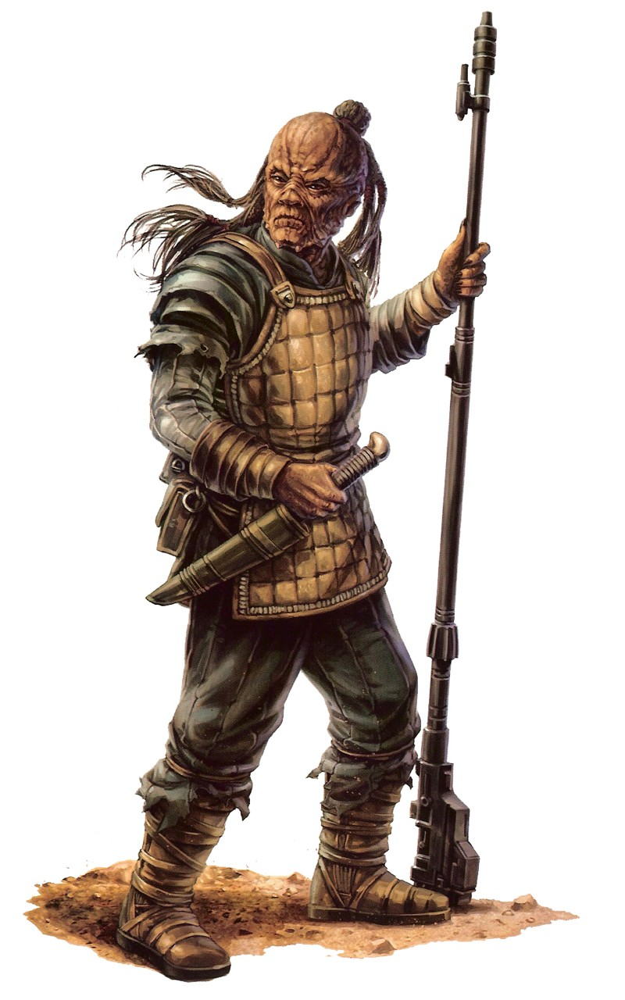

Weequay
weequay
Special Abilities: Weequays begin the game with one rank in Resilience or one rank in Athletics. They still may not train Resilience or Athletics above rank 2 during character creation.
Pheromones: A Weequay can communicate with other Weequays using pheromones. This is completely non-verbal, and undetectable to any other species nearby. Weequays can only communicate like this if they are within short range of each other.
Weequays are harsh creatures from a harsh homeworld. They have thick, toughened skin and a dense, powerful bone structure, and are often seen as ideal bodyguards due to this natural resilience and durability. Their cultural structure, idealizing violence and conflict, also makes them more than likely to follow the path of the Hired Gun or other occupations that emphasize martial prowess over more intellectual pursuits.
Most Weequays tend to be quiet, solitary beings, speaking very little to outsiders. However, this has not stopped some Weequays from rising to prominence as pirates and brigands across the galaxy. There were even a few Weequay Jedi once, and some Weequays fight with the Rebellion against the Galactic Empire. Those who leave their homeworld are generally more gregarious than their fellows, although their personalities tend towards sardonic and biting.
Weequays can communicate nonverbally through a discharge of pheromones from their bodies, but this form of communication is only possible among members of the same clan across relatively short distances. This trait, however, might help to explain why many view Weequays as taciturn even among their own kind. It's also the likely cause of the bitter, caustic scent most species associate with Weequays.
Weequays are humanoids averaging roughly two meters in height. Their desert homeworld results in coarse, hardened skin generally colored in shades of brown to black. Adding to their reputation for grim narrow-mindedness, Weequay faces are rigid and lipless, with a bony frill or crest down either jawline.
Males encountered off their homeworld keep their hair in a single topknot composed of multiple braids, traditionally one for each of their native years spent away from home. Less traditional males, however, might not follow this. Weequays' eyes are sunk deeply in the folds and creases of their weathered faces, providing better protection from harsh sunlight.
Weequay society is complex and brutal. Built around the clan unit, Weequay society is pitilessly impersonal, with each individual striving to honor his various gods in his own way. These gods symbolize both natural forces on Sriluur as well as the spirits of important animals. The two most important gods worshiped by Weequays are Am-Shak the thunder god and Quay, the god of Sriluur's brightest moon. Weequays usually honor their gods in ceremonies that focus on the sacrifice of a worthy opponent, either in hunt or in battle. Generally, this is some large or vicious beast
The recently-ended war with the Houk resulted in more Weequay warriors trained in modern equipment and tactics, and also developing dispositions at odds with their clannish origins. Many of these idle warriors eventually chose to leave their homeworld to seek gainful employment elsewhere, most finding positions in mercenary companies or as blasters-for-hire for a wide range of organizations and individuals.
Weequays are native to the planet Sriluur in the Sriluur system. An inhospitable world primarily composed of arid deserts, terrible volcanoes, and corrosive seas, Sriluur is located just Core-ward of Hutt Space along the Sisar Run. The planet is also home to another sentient species, the Houk, who attempted to colonize the planet over 200 years ago. This resulted in a state of restless antagonism lasting centuries, and has recently erupted into open warfare. This WeequayHouk war lasted for more than ten years, ending in an uneasy peace just before the Battle of Yavin.
Sriluur has recently been subjected to Imperial occupation for fear of growing criminal activity, Hutt involvement, and civil unrest. A sizable military presence on the planet has not curbed the region's chaotic nature, however, and neither the Weequay nor the Houk are known for their Imperial sympathies.
The Weequays on Sriluur speak their own language, Sriluurian, between clans, but within a clan they often use their pheromone-based communication in near-silence. Although only used between members of the same clan, this habit can make the Weequays seem aloof and forbidding.
Some more forward-thinking Weequays are quite verbose, often exhibiting a harsh, sardonic sense of humor in their interactions with both friend and foe alike. These Weequays speak fluent Basic and may often rise to positions of power and authority in a variety of organizations and criminal enterprises.
Weequays who venture off Sriluur are frequently employed as bodyguards or other contracted combatants. Their natural durability gives them an edge in battle, which often comes as a surprise to those not familiar with the species. In addition, the ferocious and belligerent nature of their society makes them eminently suited to roles in the sinister world of galactic crime and the grey peripheries of society.
There have been many instances when Weequays have risen to positions of prominence within such shadowy organizations. The more adventurous Weequays who venture off their homeworld tend to be more cunning and astute than the species average. Coupled with their cynical and scheming view of reality, this tends to give them an edge in dealing with a galaxy more familiar with the quietly savage stereotype of the species. Many criminal figures have entered into dealings with a Weequay planning to victimize a simple and unsophisticated species, only to find themselves on the wrong side of a very bad deal.
The name Weequay literally translates to "follower of Quay." Most Weequays do not embark on any important action without first consulting any of a variety of totems in order to seek the guidance of their gods. Those Weequays seeking the assistance of Quay specifically use a totem known as a Quay, which is often seen as being a part of the great god himself.
Many Weequays consult their Quay before any sort of enterprise. However, most sentient races dismiss the use of the Quay as pointless superstition, seeing the totem as little more than a clever child's toy. In fact, those Weequays who rose to the rank of Jedi came almost exclusively from backgrounds that precluded their belief in the ancestral gods and the consultation of totems, including the Quay. Because of this prejudice, many prominent Weequays forego the public use of the Quay as well, or eschew the totems altogether.